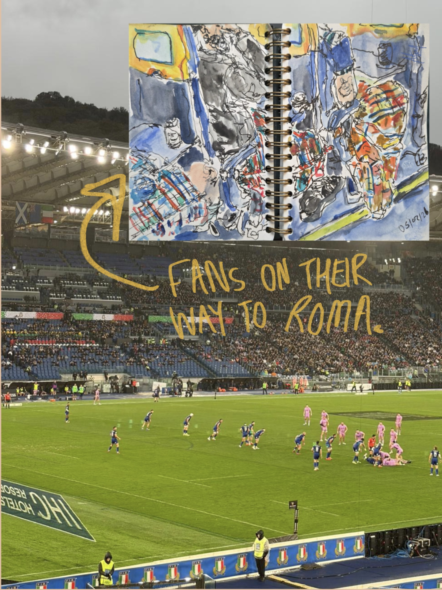

In February, I travelled to Rome to watch Scotland in the Six Nations. After surviving the rain, I headed to sunny Buenos Aires to visit friends and we travelled to Rio de Janeiro for Carnival, followed by a solo trip to Peru. Here are some pieces of art I stumbled across on my adventure and fell in love with, and some sketches I created to document my adventures.
Rome



Buenos Aires
I have written a separate post about La Boca because I loved it so much. Here's two sketches I did whilst there and some pieces I saw in the Museum of Contemporary Art in Buenos Aires and the Museo de Latinoamericano de Buenos Aires.

.gif)


.gif)

Rio
I didn't create much in Rio because there is no time during Carnival; you are either dancing or asleep. Here's a sketch I did after leaving of my friends Jen and Rebecca.

Peru
Peru was an incredible experience and a place I hope to go back to one day. Their love of tradition and craft is so inspiring and, when you speak to locals, you can feel their pride in the ancestors for the sacrifices they made in protecting their traditions during colonisation by the Spanish. It's a wonder of a country with so much natural beauty. I cannot wait to explore there again one day. My time in Lima was short but I went to the Museum of Pre-Columbian textiles, displaying original textiles and crafts from the Inca and Quechuan era and the complex methods they used to create vibrant and intuitive textiles for their communities.
The Contemporary Art Museum of Lima also had a brilliant collection of artworks centered in Peru, including the Francesco Mariotti & María Luy joint exhibit (read more here) , which included a very powerful installation where Luy made 8 postcards, each with a drawing that her daughters created depicting scenes of the Lebanon war through childrens eyes, then on the reverse of the card, Luy added images from news articles documenting Palestinian refugees being killed during the Sabra and Shatila Massacre in 1982. Luy added quotes from major artists about the revolutionary power of art alongside the images. The distressing images of the Palestinan victims, including children, being so closely presented with the innocent childish depicitions of war was gut-wrentching. A clear reminder of the inncocence of the victims of war and genocide, right there as plain as day on a A3 piece of card.


.gif)